Python
Sistemas Software Basados en Web
Python en 90 minutos
Python es un lenguaje de script
- No hay compilador
- Un interprete produce un byte code:
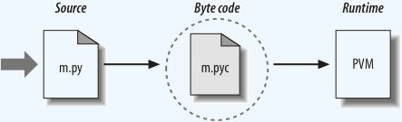
- que interpreta una máquina virtual
Programas Binarios
También se pueden hacer ejecutables en windows, embebiendo la maquina virtual
("frozen binaries")
py2exe
Ejecutar Python
doble click en windows
o
shell> python source.py
shell> python3 source.py
En Unix o Windows
Ejecutar Python
En Unix: poniendo al principio del código:
#!/usr/bin/env python3
y
> chmod a+x source.py
> ./source.py
Modulos
Cada arhivo que acaba en la extensión .py
es un módulo
# Ejemplo de codigo pyhton
import sys
print(sys.platform)
Otros archivos pueden usar los contenidos del módulo mediante
la función import
Espacio de Nombres y Atributos
Cada módulo define un Espacio de Nombres, cada uno
de los ellos se llama Atributo
# Modulo A.py
saludo = "Hola mundo"
# Modulo B.py
import A
print(A.saludo)
Espacio de Nombres y Atributos
A los contenidos de otros módulos se accede con
las funciones
import o from
# Modulo B.py
from A import saludo
print(saludo)
Estructura de un programa Python
- Los programas se componen de módulos
- Los módulos contienen instrucciones
- Las instrucciones contienen expresiones
- Las expresiones crean y procesan objetos
Números
Los objetos número se manejan con:
- Operadores como los de C: +, -, ...
- Funciones incorporadas: abs, pow, ...
- Modulos: math, random, ...
Cadenas
Secuencias inmutables de carácteres
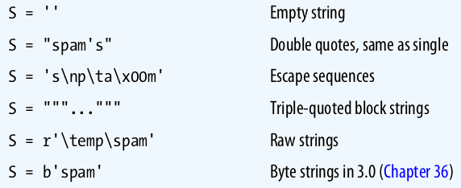
Secuencias
Las cadenas, como otros tipos de objetos, son secuencias ordenadas,
admiten operaciones como el indexado y el troceado
S = 'abcde'
len(S) # Tamaño
S[1] # b
S[1:3] # bcd Troceado
S[1:] # bcde
Manejo de cadenas
S = 'abc' + 'def' # Concatenación
S = 'a' * 4 # Repetición
S = '%s %3.1f' % ('Vers', 2) # Formato
S = f"Interpola {variables}" # Interpolación python3
Métodos propios del tipo
S = ' Hola mundo '
S.strip()
S.find('a')
S.replace('Hola', 'Adios')
S.lower()
S.isdigit()
S.split()
Tipos de cadenas
En python3 hay dos tipos de cadenas ligeramente distintos,
secuencias de bytes y secuencias
de caracteres.
S = b'balas' # 5 bytes
S = 'cañón' # 5 carácteres
# pero no 5 bytes
Los bytes se usan para audio, imágenes, etc. y los carácteres para texto.
Asignación dinámica de tipos
Las variables en python no se declaran.
Tienen el tipo de la última asignación que
se les haga.
S = 'una cadena'
S = 10 # Ahora es un entero
Referencias compartidas
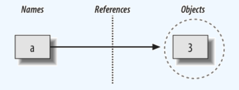
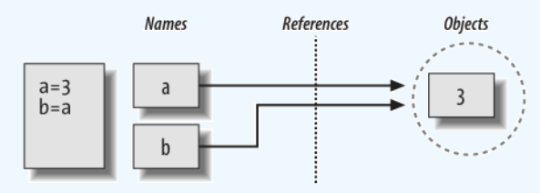
Referencias compartidas
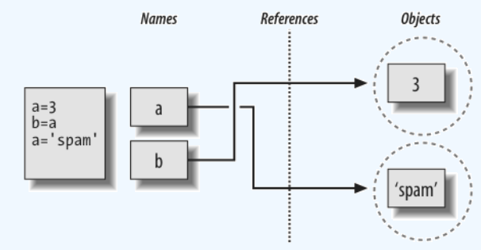
Referencia vs copia
L1 = L2 # Referencia compartida
L2[2] = 0 # También cambia L1
L1 = L2[:] # Copia, se crea un nuevo objeto
L2[2] = 1 # No cambia L1
Conversión de tipos
S = 2
type(S) # Entero
S = str(S) # Cadena
S = int(S) # Entero
S = S + 2.0 # Cambia a
type (S) # Decimal
help(S)
dir (S)
Listas
Secuencias mutables de objetos
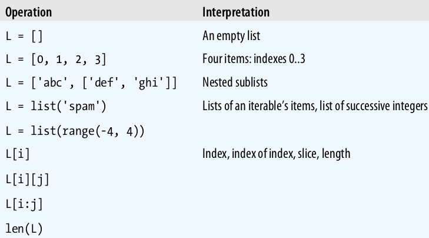
Operadores de listas
L = [2, 3] # Asignación
L[1] = 4 # Extracción
L = L + [4, 5] # Concatenación
L = L * 2 # Repetición
3 in L # Pertenencia
del L[1:3] # Borrado
a = min(L)
Métodos para listas
L.append(23)
L.extend([12, 18])
L.sort()
L.reverse()
L.remove(23)
L.pop()
Matrices
M = [[1,2,3],
[4,5,6],
[7,8,9]
]
M[0][2] # 3
Listas autodefinidas
Son un tipo de expresión de python para generar listas
# Segunda columna de la matriz
L = [col[1] for col in M]
se ejecuta una expresión en cada elemento de una
secuencia.
Diccionarios
Correspondencias entre nombres y objetos
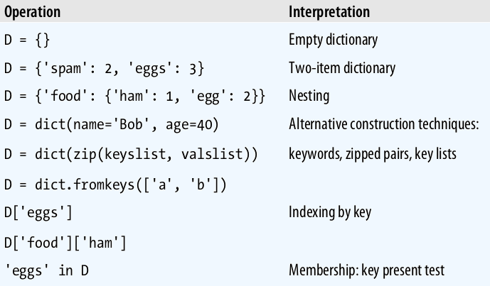
Manejando diccionarios
D = {'Nombre': 'Pepe',
'Apellidos': ['Garcia','Gil'],
'DNI': 232323}
print D['Apellidos'][1] # Gil
for x in D:
print(x, ' ',D[x])
tabulador
dentro del bucle y : al final del for
Operador de extracción
D['nombre'] # salta error
(no existe la clave)
# Mejor:
D.get('nombre', '') # ''
Iterables
Los métodos keys(), values(), y items() producen objetos vista que son
iterables, i.e. van produciendo cada valor en las iteraciones en lugar de devolver toda la lista
a la vez
for x in D.values():
print(x)
sorted
La función sorted admite listas y objetos iterables
from operator import itemgetter
Edad = {'Pepe': 33, 'Juan': 44}
print (sorted(Edad, key=itemgetter(1)))
Tuplas
Secuencias ordenadas inmutables
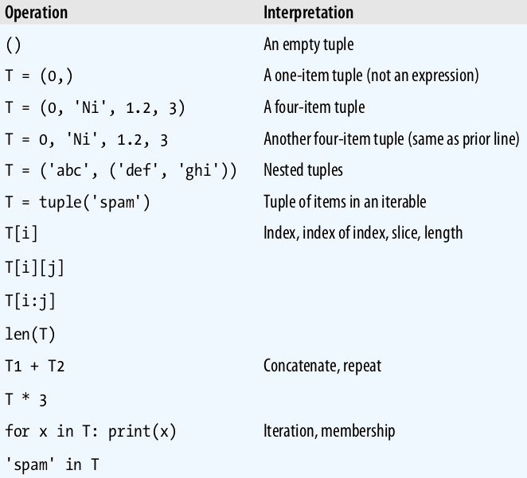
Conjuntos
Colecciones inmutables no ordenadas
a = {1, 2, 3, 4}
b = {4, 5, 6, 7}
Union = a | b
Interseccion = a & b
Diferencia = a - b
Diferencia_s = a ^ b
Booleanos
True , False
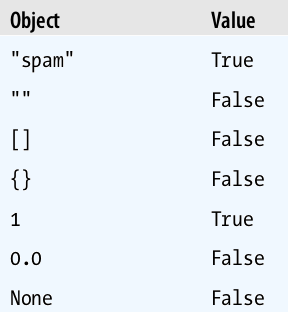
Condicional
if a > 3:
print('a mayor 3')
elif a > 2:
print('a mayor 2')
else:
print('a menor 2')
tabuladores y : en lugar de bloque
Archivos: Entrada
# Abrir archivo entrada de texto
f_texto = open('a.txt', 'rt')
# Leer todo
contenido = f_texto.read()
# Leer línea a ĺínea
for l in open ('a.txt', encoding='utf8')
print(l, end='')
Archivos: Salida
# Para salida de datos
f_data = open ('a.dat', 'wb')
f_data.write(stream)
f_data.close()
Persistencia
Con el módulo pickle
import pickle
D = {'a':1, 'b':2}
F = open ('d.dat', wb)
pickle.dump(D,F)
F.close()
Persistencia
import pickle
F = open('d.dat', 'rb')
D = pickle.load(F)
print (D['a'])
Funciones
def crea un objeto función y le asigna un nombre
def suma (x, y):
""" Esta funcion suma """
return x+y
a = suma(1,2) # 3
sum = suma
b = sum(1,2) # 3
Argumentos por defecto
def s (a, b=2, c):
return a+b+c
r = s(1, c=3) # 6
Los argumentos se identifica por la posición o
asignadoles un valor
También se pueden recoger los argumentos de una función
en una lista o en un diccionario
#Número indeterminado de argumentos
def f (*args):
for a in arg:
print(a)
def g (**arg):
for k in arg:
print(k, arg[k])
f(1,2,3)
g(a=1,b=2)
Alcance de las variables
Las variables definidas dentro un def son
locales a esa función
def f():
a = 3
a = 4
f()
print(a) # 4
Variables globales
Las variables definidas fuera de todos los def son
globales en el archivo
def suma(b):
return a + b
a = 4
c = suma(2)
print(c) # 6
Variables Globales
Para cambiar una variable global dentro
de una función, tiene que estar declarada
global
def suma(b):
global a
a = 4
return a + b
a = 3
c = suma(3)
print(c, a) # 7, 4
Argumentos
Los argumentos se asignan a variables locales,
por tanto:
def f(a):
a = 99
b = 88
f(b)
print(b) # 88
Argumentos
def f(L): # L es una referencia
L[1] = 99
M = [1,2,3]
f(M)
print (M[1]) # 99
Funciones anónimas
Además de def se pueden crear
funciones con expresiones lamda
para funciones in-line
L = [lambda x: x**2,
lambda x: x**3]
for f in L:
print (f(2)) # 4, 8
Clases
class sirve para definir clases (nuevos tipos de objetos)
class mi_clase:
""" Documentacion para la clase"""
c = '' # Atributo
# Inicializacion
def __init__(self, a):
self.c = a
def getc(self): # Metodo
return self.c
Clases
Los atributos y métodos son publicos por defecto
a = mi_clase(2)
print(a.c) # 2
print(a.getc()) # 2
# Atributo aniadido fuera de la clase
a.b = 3
print (a.b) # 3
Las variables privadas empiezan por _
Herencia
Las clases pueden heredar atributos o métodos de otras
clases
class mi_clase_2 (mi_clase):
def getc (self):
return self.c * 2
a = mi_clase_2(4)
print (a.getc()) # 8
Excepciones
Sirven para tratar los errores en tiempo
de ejecución
Se utilizan las instruciones:
Excepciones
try:
f = open ('lalala.txt', 'r')
i = int(f.readline())
except IOError as err:
print ("I/O Error : %s" % err)
except ValueError:
print ("Error de conversion")
except:
print ("Error inesperado")
raise
Excepciones
except err captura el evento err que se produzca
dentro del bloque try
Sin err captura cualquier error
raise vuelve a activar el error para que
pase al nivel superior
Más sobre módulos
Son archivos que agrupan código para reusarlo, se
usan con import y from
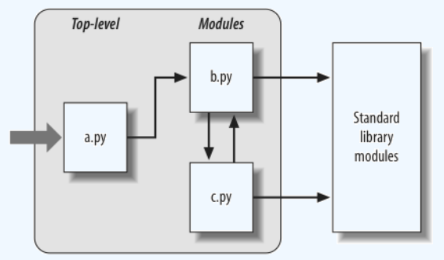
Módulos como programas
Los módulos pueden funcionar como
programas independientes sin incluyen al final:
if __name__ == '__main__':
# Código para cuando se
# ejecute el archivo
# como script
Módulos estándar
Python incluye una collección de sobre 200
módulos, la librería standard, para hacer todo tipo de tareas
Paquetes de módulos
Los módulos se pueden agrupar en paquetes,
poniendo los archivos en un mismo directorio
Cada directorio conteniendo paquetes debe incluir
un archivo llamado __init__.py
Repositorio de python
Se pueden bajar paquetes del repositorio
PyPI
Se instalan con el programa:
pip
install paquete
o con apt-get y similares
Resumen de la sintaxis
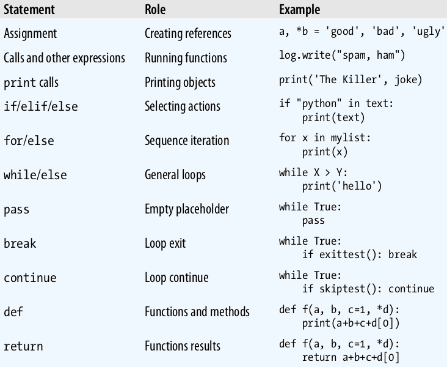
Resumen de la sintaxis
A diferencia de otros lenguajes:
- No hay punto y coma final
- Al principio del bloque se pone :
- El bloque se indica con tabuladores
- No hace falta poner paréntesis en los if
También se admite:
a = 2; c = 1
# Una sola línea
if x > y: print(x)
# Varias líneas con paréntesis
X = (A + B +
C + D)
Documentación
Con help:
a = 'hola'
help(a)
help(a.find)
import string
help(string)